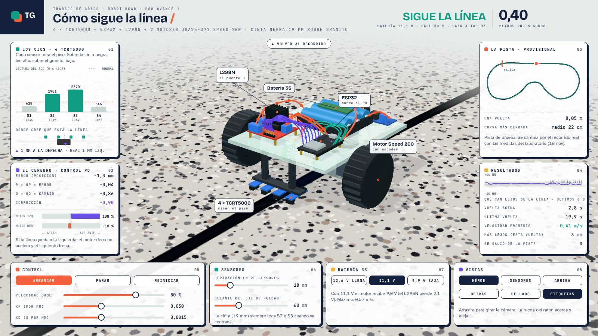
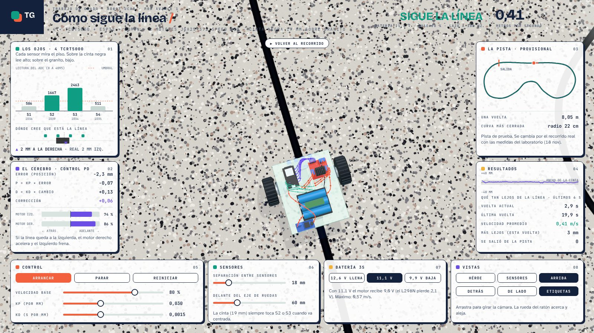

Prototipo P08 · Avance 1 · Simulador 3D
Cómo sigue la línea el robot
Cuatro sensores miran el piso. El ESP32 calcula dónde quedó la cinta y corrige: si se fue a la izquierda, acelera la rueda derecha y frena la izquierda. Así, 100 veces por segundo.

Abrir el simulador ▶Funciona sin internet, en una sola página. Mejor en computadora. En teléfono, gíralo de lado. Usa el mismo robot del simulador de la tracción, que no se tocó.
¿El centro se queda en blanco o va lento? Abre la versión ligera (sin sombras ni efectos). El simulador también baja la calidad solo si detecta que el equipo no puede.
Cómo usarlo
Si no lo tocas, hace un recorrido solo. Al tocar cualquier cosa, lo manejas tú.
- ArrancaARRANCAR, PARAR y REINICIAR. También espacio y R.
- Ajusta el PDVelocidad base, Kp y Kd. Mira la gráfica: si zigzaguea, algo falta.
- Mueve los sensoresSeparación entre ellos y qué tan adelante de las ruedas van.
- Batería fijaQueda en 11,1 V para enfocarse en el PD. Se cambia en el simulador de P03. Con 9,9 V el robot va más lento (ver la tabla).
Lo que se aprende
Alto en la cinta, bajo en el piso
Cada TCRT5000 da un número de 0 a 4095. Los granos negros del granito también suben la lectura; por eso hay un umbral: lo que queda por debajo cuenta como piso.
Proporcional y derivativo
P corrige según qué tan lejos está la línea. D frena la corrección si la línea se acerca rápido. Sin D, el robot zigzaguea y se sale.
La separación importa
Si entre los dos sensores del centro hay más de 19 mm, la cinta cabe en el hueco y ninguno la ve. Si van muy cerca de las ruedas, ven la curva tarde.
Menos voltios, menos velocidad
De 12,6 V a 9,9 V la vuelta pasa de 17 s a 22,5 s. Con la batería baja el robot queda justo en la meta de 0,35 m/s.
Resultados en la pista de prueba
Una vuelta mide 8,05 m y la curva más cerrada tiene 22 cm de radio. Valores iniciales: base 80 %, Kp 0,030, Kd 0,0015, sensores a 18 mm entre sí y a 60 mm del eje.
| Qué se cambió | Vuelta | Velocidad | Más lejos | Resultado |
|---|---|---|---|---|
| Valores iniciales, batería 11,1 V (la del simulador) | 19,7 s | 0,41 m/s | 17 mm | Da la vuelta |
| Batería llena, 12,6 V | 17,1 s | 0,47 m/s | 18 mm | Da la vuelta |
| Batería baja, 9,9 V | 22,5 s | 0,36 m/s | 16 mm | Da la vuelta, justo en la meta |
| Base al 100 % | 18,0 s | 0,45 m/s | 26 mm | Da la vuelta, pero se mece más |
| Sensores a 120 mm del eje | 19,3 s | 0,42 m/s | 14 mm | Da la vuelta, más centrado |
| Sensores a 30 mm entre sí | 37,0 s | 0,22 m/s | 50 mm | Pierde la línea el 23 % del tiempo |
| Sin derivativo (Kd = 0) | No completa la vuelta | Zigzaguea y se sale | ||
| Kp bajo (0,010) | No completa la vuelta | Se sale de la pista | ||
| Sensores a 30 mm del eje | No completa la vuelta | Se sale de la pista | ||
"Más lejos" es la distancia máxima entre el centro de la regleta de sensores y el centro de la cinta, en una vuelta. Salen de pruebas.mjs, que corre el mismo código de la página sin pantalla, con el granito incluido. Cada corrida varía un poco por el ruido de los sensores.
De dónde salen los números
El motor y el driver son los mismos del avance 2 de P03. Lo nuevo de los sensores son supuestos hasta tener los módulos.
| Dato | Valor |
|---|---|
| Motor (kit Emoshayoga JGA25-371 Speed 200, tabla del vendedor) | 280 rpm sin carga a 12 V, caja 1:21,3 |
| Caída del L298N (igual que P03) | 2,1 V |
| Rueda y distancia entre ruedas | Ø 65 mm · 180 mm |
| Batería 3S | 12,6 V llena · 11,1 V nominal · 9,9 V alarma |
| Peso del robot (supuesto de P03) | 80 % de la velocidad sin carga |
| Rueda en llegar a su velocidad (supuesto de P03) | 0,18 s |
| Cinta (lista de materiales) | Aislante negra de 19 mm |
| Lectura del ADC en piso y en cinta (supuesto) | 500 y 3 300 de 4 095 |
| Zona que ve cada sensor (supuesto) | radio 3 mm |
| Granito (inventado al azar) | 22 % de granos; un grano negro lee 60 % de lo que lee la cinta |
| Umbral y lazo de control (supuesto) | 20 % · 100 veces por segundo |
Evidencias
Capturas del simulador. Toca una para verla grande.




Lo que el simulador no sabe
La pista es inventada. Se cambia por el recorrido real con las medidas de la observación del 18 nov (distancias, pasillos y la foto del piso).
Los sensores no están calibrados. Cuando lleguen los TCRT5000 hay que leer cuánto marcan sobre el granito del laboratorio y sobre la cinta, a la altura real.
El motor es ideal. No sabe el PWM mínimo para que arranque, cuánto patinan las ruedas ni el peso real. P03 lo mide con el encoder en la semana 6.
Código para el ESP32
Es el mismo control de la simulación escrito para el robot de verdad: lee los 4 sensores, calcula dónde está la línea, aplica el PD y manda el PWM a los dos motores. Se abre en el Arduino IDE y se sube tal cual.
Se comprobó que da los mismos números que control() del simulador en 6 casos de lecturas. Los pines son la propuesta del mapa de pines, y los valores de los sensores son supuestos hasta calibrar con el hardware real (los pasos están al inicio del archivo).
Ver el código aquí
/*
P08 · Seguidor de línea · ESP32 + L298N + 4 × TCRT5000
Tesis: Robot móvil para búsqueda y transporte de componentes (UCAB Telecom)
Este código hace lo mismo que el simulador 3D (codigo/model.js, función control()):
- Lee los 4 sensores TCRT5000 (salida analógica A0) en ADC1.
- Calcula dónde está la línea (promedio de las lecturas, ponderado por la posición de cada sensor).
- Controla con un PD y manda un PWM distinto a cada motor.
- Si ningún sensor ve la línea, sigue girando hacia el lado donde la vio por última vez.
- Lazo de control a 100 Hz.
Valores iniciales = los de la página del simulador:
BASE 0.8 · KP 0.03 · KD 0.0015 · separación entre sensores 18 mm
IMPORTANTE (qué es medido y qué es supuesto):
- ADC_PISO, ADC_CINTA, SEP_MM, KP y KD son los de la SIMULACIÓN. Hay que calibrarlos con el robot real.
- Pines: son la PROPUESTA del mapa de pines (datos/proyecto.js). Se confirman en la Fase II.
Placa en Arduino IDE: "ESP32 Dev Module". Probado para el core ESP32 3.x (ledcAttach).
Si usas el core 2.x, mira los comentarios marcados con "CORE 2.x".
Cómo calibrar (3 pasos):
1. Sube el código y abre el Monitor Serie a 115200.
2. Pon el robot con los 4 sensores sobre el piso: anota el valor de raw (ADC_PISO).
Luego sobre la cinta negra: anota raw (ADC_CINTA). Cambia las dos constantes.
3. Con el robot en el piso, levanta SOLO la rueda: ajusta KP y KD hasta que no zigzaguee.
*/
#include <Arduino.h>
// ---------- PINES (propuesta del mapa de pines del proyecto) ----------
// Sensores de línea: ADC1 (el ADC2 no funciona con el Wi-Fi encendido). Orden: de IZQUIERDA a DERECHA.
const uint8_t PIN_SENSOR[4] = {36, 39, 34, 35}; // GPIO 36 (VP), 39 (VN), 34, 35: solo entrada
// Puente H L298N, motor izquierdo
const uint8_t PIN_ENA = 25; // PWM. Quitar el puente (jumper) ENA del L298N
const uint8_t PIN_IN1 = 26;
const uint8_t PIN_IN2 = 27;
// Puente H L298N, motor derecho
const uint8_t PIN_ENB = 14; // PWM. Quitar el puente (jumper) ENB del L298N
const uint8_t PIN_IN3 = 4;
const uint8_t PIN_IN4 = 13;
// Batería 3S por divisor 100 kΩ + 22 kΩ (12,6 V quedan en 2,27 V)
const uint8_t PIN_BATERIA = 32;
// ---------- PARÁMETROS DEL CONTROL (los mismos de la simulación) ----------
const float BASE = 0.80f; // velocidad base, de 0 a 1 (en el simulador: 80 %)
const float KP = 0.030f; // ganancia proporcional (PWM por cada mm de error)
const float KD = 0.0015f; // ganancia derivativa (PWM por cada mm/s de cambio del error)
const float SEP_MM = 18.0f; // separación entre sensores vecinos (mm). Medir con los módulos reales
// Sensores (SUPUESTOS de la simulación: calibrar con los TCRT5000 reales)
const int ADC_PISO = 500; // lectura sobre piso claro (de 4095)
const int ADC_CINTA = 3300; // lectura sobre la cinta negra
const float UMBRAL = 0.20f; // por debajo del 20 % se cuenta como piso
const float SUMA_MIN = 0.30f; // suma mínima para decir "veo la línea"
// Tiempo
const uint32_t PERIODO_US = 10000; // 10 ms = 100 Hz, igual que el simulador
const float DT = PERIODO_US / 1e6f;
// PWM del ESP32
const uint32_t PWM_HZ = 1000; // 1 kHz, bueno para el L298N
const uint8_t PWM_BITS = 10; // 0 a 1023
const int PWM_MAX = (1 << PWM_BITS) - 1;
// Batería baja (la alarma del simulador: 9,9 V)
const float BAT_BAJA_V = 9.9f;
const float DIVISOR = (100.0f + 22.0f) / 22.0f;
// ---------- ESTADO (lo que el ESP32 recuerda entre vueltas del lazo) ----------
struct Estado {
float ultimaPos = 0.0f; // última posición (mm) en que vio la línea
float errorAnterior = 0.0f;
bool hayError = false;
};
Estado st;
struct Salida {
float n[4]; // lecturas normalizadas (0 a 1)
float suma;
float pos_mm; // posición de la línea (+ = a la izquierda)
float P, D, corr;
bool perdida;
float izq, der; // PWM de cada motor, de -1 a 1
};
float limitar(float x, float a, float b) { return x < a ? a : (x > b ? b : x); }
// Posición de cada sensor en mm respecto al centro (izquierda +): +1.5, +0.5, -0.5, -1.5 separaciones
float xSensor(int i) { return (1.5f - i) * SEP_MM; }
// El corazón: de las 4 lecturas a los PWM. Es la misma cuenta que control() en model.js.
Salida calcularControl(Estado &e, const int raw[4]) {
Salida s;
s.suma = 0;
for (int i = 0; i < 4; i++) {
float v = (raw[i] - ADC_PISO) / float(ADC_CINTA - ADC_PISO);
s.n[i] = (v < UMBRAL) ? 0.0f : (v > 1.0f ? 1.0f : v);
s.suma += s.n[i];
}
float pos;
s.perdida = false;
if (s.suma > SUMA_MIN) {
float acum = 0;
for (int i = 0; i < 4; i++) acum += s.n[i] * xSensor(i);
pos = acum / s.suma;
e.ultimaPos = pos;
} else {
// No ve la línea: sigue girando hacia el último lado donde la vio
s.perdida = true;
float lado = (e.ultimaPos < 0) ? -1.0f : 1.0f;
pos = lado * xSensor(0) * 1.2f;
}
s.pos_mm = pos; // ya está en mm: es el error
float de = e.hayError ? (pos - e.errorAnterior) / DT : 0.0f;
e.errorAnterior = pos;
e.hayError = true;
s.P = KP * pos;
s.D = KD * de;
s.corr = s.P + s.D;
s.izq = limitar(BASE - s.corr, -1.0f, 1.0f);
s.der = limitar(BASE + s.corr, -1.0f, 1.0f);
return s;
}
// ---------- MOTORES ----------
// Manda un PWM de -1 a 1 a un lado. Positivo = adelante, negativo = atrás, 0 = frena.
void moverMotor(uint8_t pinEn, uint8_t pinA, uint8_t pinB, float pwm) {
int duty = (int)(fabsf(pwm) * PWM_MAX);
if (pwm > 0) { digitalWrite(pinA, HIGH); digitalWrite(pinB, LOW); }
else if (pwm < 0) { digitalWrite(pinA, LOW); digitalWrite(pinB, HIGH); }
else { digitalWrite(pinA, LOW); digitalWrite(pinB, LOW); }
ledcWrite(pinEn, duty); // CORE 2.x: ledcWrite(canal, duty) con canal 0 (izq) y 1 (der)
}
void detener() {
moverMotor(PIN_ENA, PIN_IN1, PIN_IN2, 0);
moverMotor(PIN_ENB, PIN_IN3, PIN_IN4, 0);
}
float leerBateriaV() {
// analogReadMilliVolts usa la calibración de fábrica del ESP32: más exacto que analogRead
return analogReadMilliVolts(PIN_BATERIA) / 1000.0f * DIVISOR;
}
// ---------- ARRANQUE ----------
void setup() {
Serial.begin(115200);
pinMode(PIN_IN1, OUTPUT); pinMode(PIN_IN2, OUTPUT);
pinMode(PIN_IN3, OUTPUT); pinMode(PIN_IN4, OUTPUT);
// CORE 3.x: ledcAttach(pin, frecuencia, bits)
ledcAttach(PIN_ENA, PWM_HZ, PWM_BITS);
ledcAttach(PIN_ENB, PWM_HZ, PWM_BITS);
// CORE 2.x, en su lugar:
// ledcSetup(0, PWM_HZ, PWM_BITS); ledcAttachPin(PIN_ENA, 0);
// ledcSetup(1, PWM_HZ, PWM_BITS); ledcAttachPin(PIN_ENB, 1);
analogReadResolution(12); // 0 a 4095, como en el simulador
for (int i = 0; i < 4; i++) {
pinMode(PIN_SENSOR[i], INPUT);
analogSetPinAttenuation(PIN_SENSOR[i], ADC_11db); // rango hasta ~3,3 V
}
analogSetPinAttenuation(PIN_BATERIA, ADC_11db);
detener();
Serial.println("P08 seguidor de linea listo. Empieza en 2 s...");
delay(2000);
}
// ---------- LAZO PRINCIPAL (100 Hz) ----------
uint32_t proximo = 0;
uint8_t contador = 0;
void loop() {
uint32_t ahora = micros();
if ((int32_t)(ahora - proximo) < 0) return; // todavía no toca
proximo = ahora + PERIODO_US;
// 1) Leer los 4 sensores
int raw[4];
for (int i = 0; i < 4; i++) raw[i] = analogRead(PIN_SENSOR[i]);
// 2) Calcular el control
Salida s = calcularControl(st, raw);
// 3) Mandar a los motores
moverMotor(PIN_ENA, PIN_IN1, PIN_IN2, s.izq);
moverMotor(PIN_ENB, PIN_IN3, PIN_IN4, s.der);
// 4) Monitor serie, 10 veces por segundo (para calibrar y depurar)
if (++contador >= 10) {
contador = 0;
float vbat = leerBateriaV();
Serial.printf("raw %4d %4d %4d %4d | pos %6.1f mm | P %5.2f D %5.2f | izq %5.2f der %5.2f%s | bat %4.1f V%s\n",
raw[0], raw[1], raw[2], raw[3], s.pos_mm, s.P, s.D, s.izq, s.der,
s.perdida ? " PERDIDA" : "", vbat, vbat < BAT_BAJA_V ? " BAJA" : "");
}
}
El código
- model.js: el motor, la lectura de los sensores y el control PD que llevará el ESP32.
- pista.js: la pista provisional y la distancia a la línea.
- granito.js: el piso de granito con la cinta encima.
- sensores3d.js: los 4 módulos TCRT5000 en 3D.
- console.js y live.js: los paneles, los controles y el recorrido.
- robot.js y stage.js: el robot de P03 y la escena.
- pruebas.mjs: la prueba sin pantalla que dio la tabla de resultados.
Hecho con el kit teardown (licencia MIT, ver LICENSE) y three.js. Ficha técnica en el README.